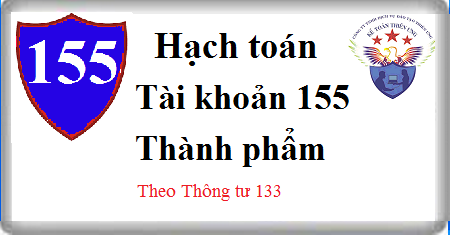

Hướng dẫn cách hạch toán Tài khoản 155 theo thông tư 133, cách hạch toán thành phẩm khi nhập kho thành phẩm, xuất kho thành phẩm đi bán, tiêu dùng nội bộ, cho biếu tặng
1. Nguyên tắc kế toán Tài khoản 155 - Thành phẩm
a) Tài khoản này dùng để phản ánh giá trị hiện có và tình hình biến động của các loại thành phẩm của doanh nghiệp. Thành phẩm là những sản phẩm đã kết thúc quá trình chế biến do các bộ phận sản xuất của doanh nghiệp sản xuất hoặc thuê ngoài gia công xong đã được kiểm nghiệm phù hợp với tiêu chuẩn kỹ thuật và nhập kho.
Trong giao dịch xuất khẩu ủy thác, tài khoản này chỉ sử dụng tại bên giao ủy thác, không sử dụng tại bên nhận ủy thác (bên nhận giữ hộ).
b) Thành phẩm do các bộ phận sản xuất chính và sản xuất phụ của doanh nghiệp sản xuất ra phải được đánh giá theo giá thành sản xuất (giá gốc), bao gồm: Chi phí nguyên liệu, vật liệu trực tiếp, chi phí nhân công trực tiếp, chi phí sản xuất chung và những chi phí khác có liên quan trực tiếp đến việc sản xuất sản phẩm.
c) Không được tính vào giá gốc thành phẩm các chi phí sau:
- Chi phí nguyên liệu, vật liệu, chi phí nhân công và các chi phí sản xuất, kinh doanh khác phát sinh trên mức bình thường;
- Chi phí vận chuyển, bảo quản hàng tồn kho trừ các khoản chi phí vận chuyển, bảo quản hàng tồn kho cần thiết cho quá trình sản xuất tiếp theo và chi phí bảo quản trong quá trình mua hàng;
- Chi phí bán hàng;
- Chi phí quản lý doanh nghiệp.
d) Thành phẩm thuê ngoài gia công chế biến được đánh giá theo giá thành thực tế gia công chế biến bao gồm: Chi phí nguyên liệu, vật liệu trực tiếp, chi phí thuê gia công và các chi phí khác có liên quan trực tiếp đến quá trình gia công.
đ) Việc tính giá trị thành phẩm xuất kho được thực hiện theo một trong ba phương pháp: Phương pháp giá thực tế đích danh; Phương pháp bình quân gia quyền sau mỗi lần nhập hoặc cuối kỳ; Phương pháp Nhập trước - Xuất trước.
e) Trường hợp doanh nghiệp kế toán hàng tồn kho theo phương pháp kê khai thường xuyên, nếu kế toán chi tiết nhập, xuất kho thành phẩm hàng ngày được ghi sổ theo giá hạch toán (có thể là giá thành kế hoạch hoặc giá nhập kho được quy định thống nhất). Cuối kỳ, kế toán phải tính giá thành thực tế của thành phẩm nhập kho và xác định hệ số chênh lệch giữa giá thành thực tế và giá hạch toán của thành phẩm (tính cả số chênh lệch của thành phẩm đầu kỳ) làm cơ sở xác định giá thành thực tế của thành phẩm nhập, xuất kho trong kỳ (sử dụng công thức tính đã nêu ở phần giải thích Tài khoản 152 Nguyên vật liệu”).
g) Kế toán chi tiết thành phẩm phải thực hiện theo từng kho, từng loại, nhóm, thứ thành phẩm.
2. Kết cấu và nội dung Tài khoản 155 - Thành phẩm
Bên Nợ:
- Trị giá của thành phẩm nhập kho;
- Trị giá của thành phẩm thừa khi kiểm kê;
- Kết chuyển trị giá thực tế của thành phẩm tồn kho cuối kỳ (trường hợp doanh nghiệp hạch toán hàng tồn kho theo phương pháp kiểm kê định kỳ).
Bên Có:
- Trị giá thực tế của thành phẩm xuất kho;
- Trị giá của thành phẩm thiếu hụt khi kiểm kê;
- Kết chuyển trị giá thực tế của thành phẩm tồn kho đầu kỳ (trường hợp doanh nghiệp hạch toán hàng tồn kho theo phương pháp kiểm kê định kỳ).
Số dư bên Nợ: Trị giá thực tế của thành phẩm tồn kho cuối kỳ.
3. Cách hạch toán thành phẩm Tài khoản 155:
3.1. Trường hợp doanh nghiệp kế toán hàng tồn kho theo phương pháp kê khai thường xuyên.
3.1.1. Nhập kho thành phẩm do doanh nghiệp sản xuất ra hoặc thuê ngoài gia công, ghi:
Nợ TK 155 - Thành phẩm
Có TK 154 - Chi phí sản xuất kinh doanh dở dang
Xem thêm: Cách tính giá nhập kho thành phẩm
3.1.2. Xuất kho thành phẩm để bán cho khách hàng, kế toán phản ánh giá vốn của thành phẩm xuất bán, ghi:
Nợ TK 632 - Giá vốn hàng bán
Có TK 155 - Thành phẩm.
3.1.3. Xuất kho thành phẩm gửi đi bán, xuất kho cho các cơ sở nhận bán hàng đại lý, ký gửi, ghi:
Nợ Tài khoản 157 Hàng gửi bán (gửi bán đại lý)
Có TK 155 - Thành phẩm.
3.1.4. Khi người mua trả lại số thành phẩm đã bán: Trường hợp thành phẩm đã bán bị trả lại thuộc đối tượng chịu thuế GTGT theo phương pháp khấu trừ, kế toán phản ánh doanh thu hàng bán bị trả lại theo giá bán chưa có thuế GTGT, ghi:
Nợ TK 511 – Doanh thu bán hàng và cung cấp dịch vụ
Nợ TK 3331 - Thuế GTGT phải nộp (33311)
Có các Tài khoản 111, 112, 131,... (tổng giá trị của hàng bán bị trả lại).
Đồng thời phản ánh giá vốn của thành phẩm đã bán nhập lại kho, ghi:
Nợ TK 155 - Thành phẩm
Có TK 632 - Giá vốn hàng bán.
3.1.5. Kế toán sản phẩm tiêu dùng nội bộ:
Nợ các TK 642, 241 ... hoặc
Nợ Tài khoản 211 Tải sản cố định
Có TK 155 - Thành phẩm.
3.1.6. Xuất kho thành phẩm đưa đi góp vốn vào đơn vi khác, ghi:
Nợ Tài khoản 228 Đầu tư góp vốn vào đơn vị khác (theo giá đánh giá lại)
Nợ TK 811 - Chi phí khác (chênh lệch giữa giá đánh giá lại nhỏ hơn giá trị ghi sổ của thành phẩm)
Có TK 155 - Thành phẩm
Có TK 711 - Thu nhập khác (chênh lệch giữa giá đánh giá lại lớn hơn giá trị ghi sổ của thành phẩm).
3.1.7 Khi xuất kho thành phẩm dùng để mua lại phần vốn góp tại đơn vị khác, ghi:
- Ghi nhận doanh thu bán thành phẩm và khoản đầu tư vào đơn vị khác, ghi:
Nợ TK 228 – Đầu tư góp vốn vào đơn vị khác (theo giá trị hợp lý)
Có TK 511- Doanh thu bán hàng và cung cấp dịch vụ
Có TK 3331 Thuế GTGT phải nộp.
- Ghi nhận giá vốn thành phẩm dùng để mua lại phần vốn góp tại đơn vị khác, ghi:
Nợ TK 632 - Giá vốn hàng bán
Có TK 155- Thành phẩm.
3.1.8. Mọi trường hợp phát hiện thừa, thiếu thành phẩm khi kiểm kê đều phải lập biên bản và truy tìm nguyên nhân xác định người phạm lỗi. Căn cứ vào biên bản kiểm kê và quyết định xử lý của cấp có thẩm quyền để ghi sổ kế toán:
- Nếu thừa, thiếu thành phẩm do nhầm lẫn hoặc chưa ghi sổ kế toán phải tiến hành ghi bổ sung hoặc điều chỉnh lại số liệu trên sổ kế toán;
- Trường hợp chưa xác định được nguyên nhân thừa, thiếu phải chờ xử lý:
+ Nếu thừa, ghi:
Nợ TK 155 - Thành phẩm (theo giá trị hợp lý)
Có TK 338 Phải trả phải nộp khác (3381).
Khi có quyết định xử lý của cấp có thẩm quyền, ghi:
Nợ TK 338 - Phải trả, phải nộp khác.
Có các tài khoản liên quan.
+ Nếu thiếu, ghi:
Nợ Tài khoản 138 Phải thu khác (1381 - Tài sản thiếu chờ xử lý)
Có TK 155 - Thành phẩm.
- Khi có quyết định xử lý của cấp có thẩm quyền, kế toán ghi:
Nợ các TK 111, 112,.... (nếu cá nhân phạm lỗi bồi thường bằng tiền)
Nợ TK 334 - Phải trả người lao động (trừ vào lương của cá nhân phạm lỗi )
Nợ TK 138 - Phải thu khác (1388) (phải thu bồi thường của người phạm lỗi)
Nợ TK 632 - Giá vốn hàng bán (phần giá trị hao hụt, mất mát còn lại sau khi trừ số thu bồi thường)
Có TK 138 - Phải thu khác (1381).
3.1.9. Trường hợp doanh nghiệp sử dụng sản phẩm sản xuất ra để biếu tặng, khuyến mại, quảng cáo (theo pháp luật về thương mại):
a) Trường hợp xuất sản phẩm để biếu tặng, khuyến mại, quảng cáo không thu tiền, không kèm theo các điều kiện khác như phải mua sản phẩm, hàng hóa...., kế toán ghi nhận giá trị sản phẩm vào chi phí bán hàng (chi tiết hàng khuyến mại, quảng cáo), ghi:
Nợ TK 642 - Chi phí quản lý kinh doanh (6421)
Có TK 155 - Thành phẩm (chi phí sản xuất sản phẩm).
b) Trường hợp xuất sản phẩm để khuyến mại, quảng cáo nhưng khách hàng chỉ được nhận hàng khuyến mại, quảng cáo kèm theo các điều kiện khác như phải mua sản phẩm (ví dụ như mua 2 sản phẩm được tặng 1 sản phẩm....) thì kế toán phải phân bổ số tiền thu được để tính doanh thu cho cả hàng khuyến mại, giá trị hàng khuyến mại được tính vào giá vốn hàng bán (trường hợp này bản chất giao dịch là giảm giá hàng bán).
- Khi xuất hàng khuyến mại, kế toán ghi nhận giá trị hàng khuyến mại vào giá vốn hàng bán, ghi:
Nợ TK 632 - Giá vốn hàng bán
Có TK 155 - Thành phẩm.
- Ghi nhận doanh thu của hàng khuyến mại trên cơ sở phân bổ số tiền thu được cho cả sản phẩm được bán và sản phẩm khuyến mại, quảng cáo, ghi:
Nợ các TK 111, 112, 131…
Có TK 511 - Doanh thu bán hàng và cung cấp dịch vụ
Có TK 3331 - Thuế GTGT phải nộp (33311) (nếu có).
c) Nếu biếu tặng cho cán bộ công nhân viên được trang trải bằng quỹ khen thưởng, phúc lợi, kế toán phải ghi nhận doanh thu, giá vốn như giao dịch bán hàng thông thường, ghi:
- Ghi nhận giá vốn hàng bán đối với giá trị sản phẩm dùng để biếu, tặng công nhân viên và người lao động:
Nợ TK 632 - Giá vốn hàng bán
Có TK 155 - Thành phẩm.
- Ghi nhận doanh thu của sản phẩm được trang trải bằng quỹ khen thưởng, phúc lợi, ghi:
Nợ TK 353 Quỹ khen thưởng, phúc lợi (tổng giá thanh toán)
Có TK 511 - Doanh thu bán hàng và cung cấp dịch vụ
Có TK 3331 - Thuế GTGT phải nộp (33311) (nếu có).
3.1.10. Kế toán trả lương cho người lao động bằng sản phẩm
- Doanh thu của sản phẩm dùng để trả lương cho người lao động, ghi:
Nợ TK 334 Phải trả người lao động (tổng giá thanh toán)
Có TK 511 - Doanh thu bán hàng và cung cấp dịch vụ
Có TK 3331 - Thuế GTGT phải nộp (33311)
Có TK 3335 - Thuế thu nhập cá nhân (nếu có).
- Ghi nhận giá vốn hàng bán đối với giá trị sản phẩm dùng để trả lương cho công nhân viên và người lao động:
Nợ TK 632 - Giá vốn hàng bán
Có TK 155 - Thành phẩm.
3.1.12. Phản ánh giá vốn thành phẩm ứ đọng, không cần dùng khi thanh lý, nhượng bán, ghi:
Nợ TK 632 - Giá vốn hàng bán
Có TK 155 - Thành phẩm.
3.2. Trường hợp doanh nghiệp hạch toán hàng tồn kho theo phương pháp kiểm kê định kỳ.
a) Đầu kỳ, kế toán căn cứ kết quả kiểm kê thành phẩm đã kết chuyển cuối kỳ trước để kết chuyển giá trị thành phẩm tồn kho đầu kỳ vào tài khoản 632 “Giá vốn hàng bán”, ghi:
Nợ TK 632 - Giá vốn hàng bán
Có TK 155 - Thành phẩm.
b) Cuối kỳ kế toán, căn cứ vào kết quả kiểm kê thành phẩm tồn kho, kết chuyển giá trị thành phẩm tồn kho cuối kỳ, ghi:
Nợ TK 155 - Thành phẩm
Có TK 632 - Giá vốn hàng bán.
--------------------------
Kế toán Diệu Tâm xin chúc các bạn làm tốt công việc kế toán!
